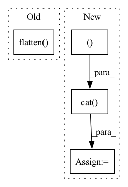

Pattern ID :32861
Before Change
self.final_procecss = final_process
def forward(self, input: t.Tensor, additional=None):
x = t.flatten( input, 2, -1)
raw, rel = [], []
for i in range(self.att_num - 1):
x, re, ra = self.layers["attention_{}".format(i)](x)
x = self.layers["tconv_{}".format(i)](x)After Change
if additional is not None:
additional = t.cat([t.unsqueeze(additional, dim=1)] * x.shape[1], dim=1)
x = t.cat( (x, additional ), dim=2)
for i in range(self.fc_num):
x = self.layers["fc_{}".format(i)](x)
if i != self.fc_num - 1:
x = self.activation(x)In pattern: SUPERPATTERN
Frequency: 4
Non-data size: 4
Instances Fragment ID: 95349353
Project Name: iffix/machin
Commit Name: afd28b6f8aec78ee14891633a07c0bedcecf303c
Time: 2020-04-19
Author: hanhanmumuqq@163.com
File Name: models/base/tcdnnet.py
M Class Name: TCDNNet
N Class Name: TCDNNet
M Method Name: forward(5)
N Method Name: forward(3)
M Parent Class: nn.Module
N Parent Class: nn.Module
M File Name: models/base/tcdnnet.py
N File Name: models/base/tcdnnet.py
M Start Line: 131
M End Line: 146
N Start Line: 142
N End Line: 177
Before Change
def forward(self, x: torch.Tensor) -> torch.Tensor:
x = self.net(x) // batch, 512, 1, 1
// Add fc layer for final prediction
x = torch.flatten( x, start_dim=1) // batch, 512
output = F.relu(self.fc1(x)) // batch, 256
output = self.fc2(output) // batch, 64
return outputAfter Change
def forward(self, x: torch.Tensor) -> torch.Tensor:
x_l = self.net(x[:, :3, :, :]).squeeze()
x_r = self.net(x[:, 3:, :, :]).squeeze()
x = torch.cat( (x_l, x_r ), dim=-1)
// Add fc layer for final prediction
output = F.relu(self.fc1(x)) // batch, 512
output = self.fc2(output) // batch, 64
return output Fragment ID: 95349350
Project Name: mees/calvin
Commit Name: dc512d655e9dbaaea4f8f71529955dd9c11d5652
Time: 2021-10-26
Author: oier.mees@gmail.com
File Name: calvin/models/encoders/tactile_encoder.py
M Class Name: TactileEncoder
N Class Name: TactileEncoder
M Method Name: forward(2)
N Method Name: forward(2)
M Parent Class: nn.Module
N Parent Class: nn.Module
M File Name: calvin/models/encoders/tactile_encoder.py
N File Name: calvin/models/encoders/tactile_encoder.py
M Start Line: 22
M End Line: 24
N Start Line: 22
N End Line: 24
Before Change
def forward(self, x: torch.Tensor) -> torch.Tensor:
x = self.net(x) // batch, 512, 1, 1
// Add fc layer for final prediction
x = torch.flatten( x, start_dim=1) // batch, 512
output = F.relu(self.fc1(x)) // batch, 256
output = self.fc2(output) // batch, 64
return outputAfter Change
def forward(self, x: torch.Tensor) -> torch.Tensor:
x_l = self.net(x[:, :3, :, :]).squeeze()
x_r = self.net(x[:, 3:, :, :]).squeeze()
x = torch.cat( (x_l, x_r ), dim=-1)
// Add fc layer for final prediction
output = F.relu(self.fc1(x)) // batch, 512
output = self.fc2(output) // batch, 64
return output Fragment ID: 95349351
Project Name: mees/calvin
Commit Name: bc70db3b8fa41fbc694ceffffd549a0f8b2afe27
Time: 2021-10-19
Author: oier.mees@gmail.com
File Name: calvin/models/encoders/tactile_encoder.py
M Class Name: TactileEncoder
N Class Name: TactileEncoder
M Method Name: forward(2)
N Method Name: forward(2)
M Parent Class: nn.Module
N Parent Class: nn.Module
M File Name: calvin/models/encoders/tactile_encoder.py
N File Name: calvin/models/encoders/tactile_encoder.py
M Start Line: 22
M End Line: 24
N Start Line: 22
N End Line: 24
Before Change
y = torch.cat((priv_obses, pub_obses,), dim=-1)
final = self._relu(self.final_cn_1(y))
final = final.flatten( 1)
final = self._relu(self.final_fc_1(final))
// Standartize last layer
if self.args.normalize:After Change
dim=-1
)
_hist_and_state_obs.unsqueeze_(1)
_card_obs = nn.ZeroPad2d((0, 7, 0, 0 ))(_card_obs)
_card_obs = torch.cat( (_card_obs, _hist_and_state_obs), dim=1)
// Add dimension for convolution channels
_card_obs.unsqueeze_(1)
y = self._feed_through_pre_layers(card_obs=_card_obs,
hist_and_state_obs=_hist_and_state_obs) Fragment ID: 95349348
Project Name: diditforlulz273/pokerrl-omaha
Commit Name: f8f7fc33d1444fc61ddf7045fe2cc2b5c80dd2f8
Time: 2020-06-13
Author: diditforlulz@gmail.com
File Name: PokerRL/rl/neural/MainPokerModuleCNN.py
M Class Name: MainPokerModuleCNN
N Class Name: MainPokerModuleCNN
M Method Name: forward(3)
N Method Name: forward(3)
M Parent Class: nn.Module
N Parent Class: nn.Module
M File Name: PokerRL/rl/neural/MainPokerModuleCNN.py
N File Name: PokerRL/rl/neural/MainPokerModuleCNN.py
M Start Line: 99
M End Line: 121
N Start Line: 91
N End Line: 115